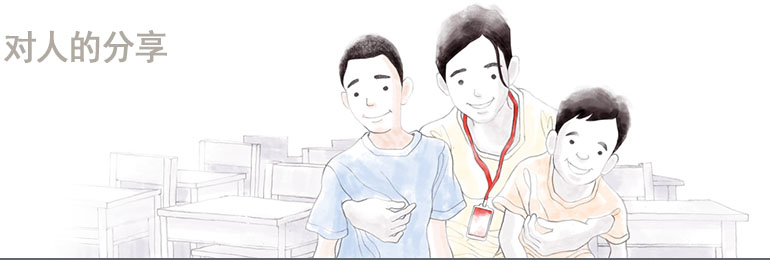
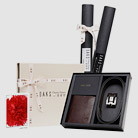
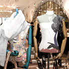
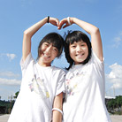

社会贡献
超越文化/艺术/环境的界 限的更大的分享的实践LF所定义的分享囊括着对人，对社
会和文化，乃至对自然的广泛的爱。我们承诺今后会持续开展各种
公益活动。


- 梦想奖学会
- 是给失业家庭的有潜力的大学生带来希望，让他们能够实现梦想、施展抱负的自发捐赠活动集会。
梦想奖学会含有表示梦想之意的英语单词“Dream”和表示为某人进行某种行动之意的韩语“奉上”双重含义，并且有100多位LF的职员和管理人员FA参与其中。
从2009年9月开始至2013年迎来第三次收获，参与人员每个月都会积存一定的金额，从2011年开始通过“未来的伙伴基金会”将募集的赞助金以奖学金的形式进行捐赠。

- 慈善项目
- DAKS饰品为了提高单亲家庭子女的家族功能及社会性，开展了2次项目。
1次慈善项目是以选定的明星为主题销售特别企划的“明星包”，2次是与代表韩国的摄影家金重晚一起
共同进行捐赠活动。正在通过把销售所得的一部分以明星和参与的艺术家的名义捐赠给针对单亲家庭子女的事业的持续的慈善项目进行开展。特别是，与演员金荷娜开展的“荷娜包”上市仅一个月就达到了3千只的销量，并成为可以和众多顾客一起分享奉献爱心捐赠的真正意义的机会。
DAKS饰品将持续不断的支持提高单亲家庭子女们的家族功能及社会性的活动。

- Good Buy 项目
- TNGT与国际救护开发NGO Good Neighbors携手开设了Pop-Up店。
在这段期间每购买1个产品就有2000韩元自动捐赠给针对非洲的不幸儿童的捐赠项目，
从而鼓励了顾客们的善意消费。

- Water Nation
- 为国内贫困儿童提供援助的Water Nation邀请Good Neighbors援助的10名儿童在HUNTER原创的雨靴上绘
制以水珠印花为主题的图画，然后在RAUM上加以展示，并把在展示期间销售的HUNTER所有销售收益的一
部分捐赠给Good Neighbors。今后HUNTER也将继续为国内的低收入家庭儿童提供援助。